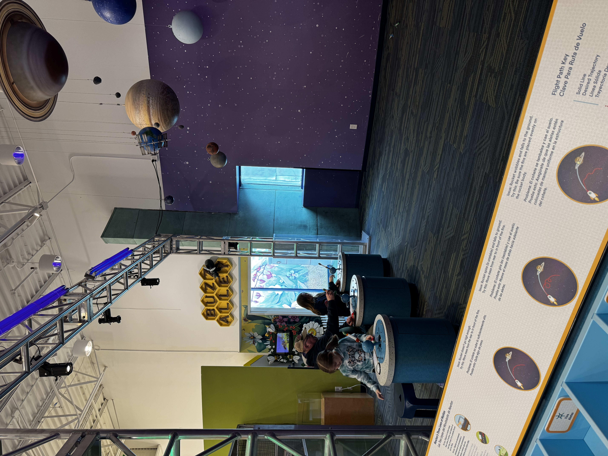
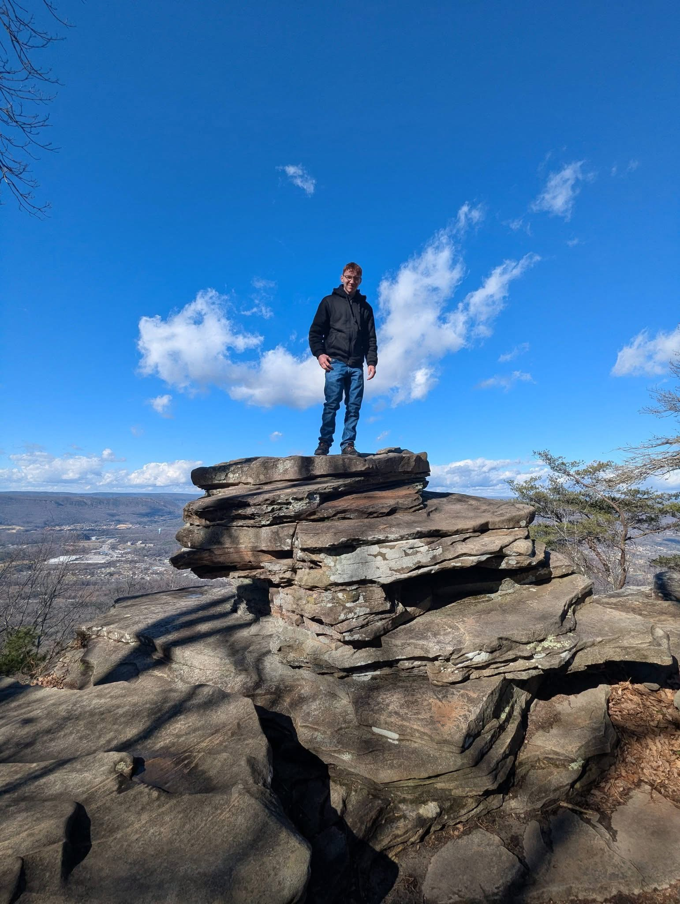

PopPop came to Tennessee
Our Favorite PopPop recently came to Tennessee to visit with all of us from January 14th-January 19th. We had the BEST TIME EVER! PopPop came late at night and we met him at the airport with a sign so he'd know we were there just for him. Payton worked really hard on making sure the sign had green because that is PopPop's favorite color! He flew from Bangor, Maine at 5:30 pm and had a layover at the Regan aiport in Washington DC then took the last flight to Chattanooga. We like going to the airport to pick up family because the smiles are the best first thing to see!!

When PopPop was here we went to Creative Discovery Museum in Chattanooga and had the best time ever. He played all the fun things with us and we had comeptitions with the hands on projects. We shot rockets at the solar system and Zoey had the best shot and hit the most planets. We were silly and tied Grace up in a chair and pretended to leave her. PopPop dug around in the sand to shape the land with Grace. It was so cool to see the light hitting the sand showing a diagram of the different heights to landmarks. Payton really enjoyed the tree climbing and slides because she was a really good climber.



On day 2 we went to Urban Air and got to do climbing, trampolines, rock wall, go carts and PIZZA! Everything was incredible. Payton loved the mini go carts the best and then enjoyed the trampolines surronded by the ball pits. Grace enjoyed the obstacle courses with rock wall, tower clibs, and driving the go carts. Zoey's favorite was the balance beam knock off, the trampolines and the go carts as well. She does not like being in second place though. PopPop and Daddy showed up and watched us do everything and ordered our Pizza and Slushies!! Yummmm


